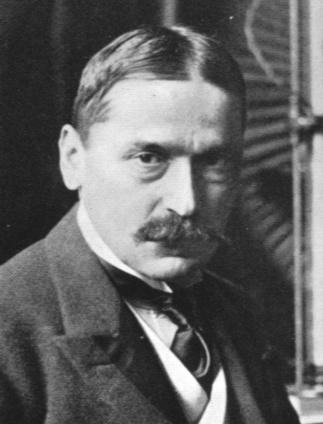

Mihajlo Idvorski Pupin
 Mihajlo Idvorski Pupin, Ph.D., LL.D. 9 October 1858 – 12 March 1935), also known as Michael I. Pupin was a Serbian American physicist, physical chemist, philanthropist and patriot. Pupin is best known for his numerous patents, including a means of greatly extending the range of long-distance telephone communication by placing loading coils (of wire) at predetermined intervals along the transmitting wire (known as "pupinization"). Pupin was a founding member of National Advisory Committee for Aeronautics (NACA) on 3 March 1915, which later became NASA.[5] In 1924, he won a Pulitzer Prize for his autobiography. Pupin was elected president or vice-president of the highest scientific and technical institutions, such as the American Institute of Electrical Engineers, the New York Academy of Sciences, the Radio Institute of America, and the American Association for the Advancement of Science. He was also a honorary consul of Serbia in the United States from 1912 to 1920 and played a role in determining the borders of newly formed Kingdom of Yugoslavia.